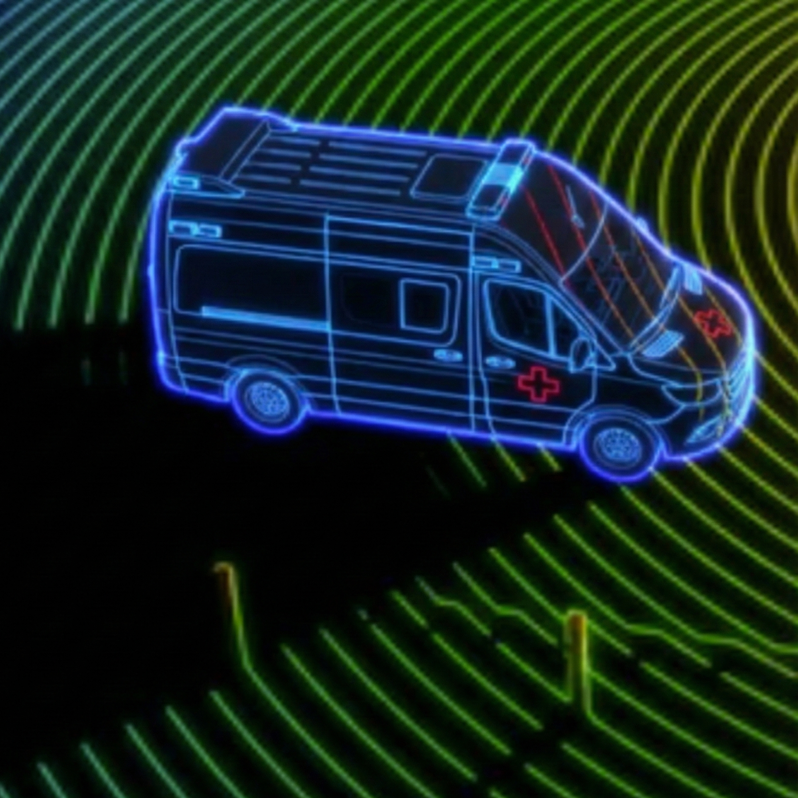

Autonomous Ambulance System
Coursework (Team Project - Fall 2024)
Overview
Team embedded build: sense range, decide, then drive. Ultrasonic distance feeds a state machine that commands differential drive around obstacles.
What I Did
01 | Embedded Sensing
SenseIntegrated HC-SR04 ultrasonics for real-time range.
02 | Actuation & Control
DrivePWM motor commands through an L298N H-bridge.
03 | Obstacle Avoidance
LogicState machine for halt, pivot, and reroute behaviors.
04 | Validation
TestTuned thresholds on hardware to cut corner traps and false positives.
Scope | Embedded Coursework
Team Arduino robot for obstacle avoidance. Sensing, PWM drive, and state-machine logic on the bench.
● COMPLETE
Closed-Loop Control Topology
Hardware I/O Map
[INPUT] Trigger/Echo
GPIO
[OUTPUT] Motor Enable
PWM
[LOGIC] Poll Rate
50 Hz
[STATE] Evasion Mode
ACTIVE
Signal Path
ULTRASONIC
DISTANCE SENSOR
ARDUINO MCU
STATE MACHINE
if (d < 20cm) → EVADE
L298N
H-BRIDGE
MOTORS
DIFFERENTIAL DRIVE
System Demonstration
MP4
Tech Stack
Arduino
C++
PWM Control
Ultrasonic Sensing
Takeaway
Working obstacle-avoidance robot: ultrasonics, PWM drive, and a tuned state machine proven on hardware.